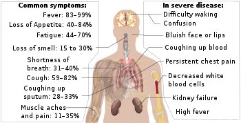
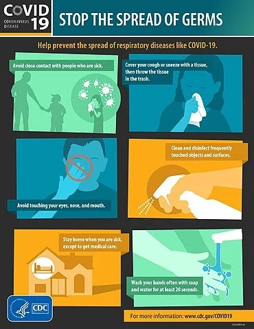

| Home | Definition | COVID-19 in Bangladesh | Endemic, Pandemic and Epidemic | Pandemics That Changed History | Gallery | Statistics of COVID-19 | Future Pandemics | About Developer |
The COVID-19 pandemic, also known as the coronavirus pandemic, is an ongoing global pandemic of coronavirus disease 2019 (COVID‑19), caused by severe acute respiratory syndrome coronavirus 2 (SARS‑CoV‑2).The pandemic has caused global social and economic disruption, including the largest global recession since the Great Depression. It has led to the postponement or cancellation of sporting, religious, political, and cultural events, widespread supply shortages exacerbated by panic buying, and decreased emissions of pollutants and greenhouse gases. Schools, universities, and colleges have been closed either on a nationwide or local basis in 172 countries, affecting approximately 98.5 percent of the world's student population. Misinformation about the virus has circulated through social media and the mass media. There have been incidents of xenophobia and discrimination against Chinese people and against those perceived as being Chinese or as being from areas with high infection rates.
A coronavirus disease, coronavirus respiratory syndrome, coronavirus pneumonia,coronavirus flu, or any other variant, is a disease caused by members of the coronavirus (CoV) family.
Coronaviruses cause different coronavirus diseases including severe acute respiratory syndrome (SARS), Middle East respiratory syndrome (MERS), and coronavirus disease 2019 (COVID-19). Some strains of coronaviruses can also cause the common cold.
The 2019–20 coronavirus outbreak, caused by COVID-19, was declared a pandemic by the World Health Organization (WHO) on 11 March 2020. Local transmission of the disease has been recorded in many countries across all six WHO regions. COVID-19 is caused by the SARS-CoV-2 coronavirus. SARS-CoV-2 is the third zoonotic coronavirus, after SARS-CoV and MERS-CoV.
Corona is derived from Latin corōna, meaning "crown, garland"; Virus also comes from Latin, where it means "slimy liquid" or "poison". Coronavirus disease was first discovered in humans in the 1930s. The virus, Human coronavirus 229E (HCoV-229E) was first isolated in 1965. A further three coronaviridae were identified in humans, these being human coronavirus NL63 (HCoV-NL63), Human coronavirus OC43 (HCoV-OC43) and Human coronavirus HKU1 (HCoV-HKU1). HCoV-229E and HCoV-NL63 are Alphacoronavirus (α-CoV or Alpha-CoV), while HCoV-OC43, HCoV-HKU1, MERS-CoV, SARS-CoV are Betacoronavirus (β-CoV or Beta-CoV). In November 2002 an outbreak of Severe Acute Respiratory Syndrome (SARS) was discovered. This disease originated in China and subsequently spread to Vietnam, Hong Kong, Taiwan, Singapore and Canada. A new coronavirus was identified in 2012 with a SARS like illness, called the Middle East Respiratory Syndrome (MERS) CoV resulted in a limited number of outbreaks, mostly in Saudi Arabia and other middle eastern countries. In December 2019, a novel coronavirus (nCoV) was identified in Wuhan, China, which was isolated on 7 January 2020. The World Health Organisation recommended the interim name of the disease as 2019-nCoV acute respiratory disease (2019-nCoV ARD) and 2019 novel coronavirus (2019-nCov) as the virus. However, the disease has subsequently been reclassified as coronavirus disease 2019 (COVID-19) and the virus as severe acute respiratory syndrome coronavirus 2 (SARS-CoV-2), which is closely related to the earlier SARS-CoV and genetically clusters within Betacoronavirus with subgenus Sarbecovirus.
On 31 December 2019, health authorities in China reported to the World Health Organization (WHO) a cluster of viral pneumonia cases of unknown cause in Wuhan, Hubei, and an investigation was launched in early January 2020. On 30 January, the WHO declared the outbreak a Public Health Emergency of International Concern (PHEIC)—7,818 cases confirmed globally, affecting 19 countries in five WHO regions. The WHO recognized the spread of COVID-19 as a pandemic on 11 March 2020 as Italy, Iran, South Korea, and Japan reported surging cases. The total numbers outside China quickly passed China's.
On 11 March 2020, the WHO said that the pandemic could be controlled. The peak and ultimate duration of the outbreak are uncertain and may differ by location. Maciej Boni of Penn State University said, "Left unchecked, infectious outbreaks typically plateau and then start to decline when the disease runs out of available hosts. But it's almost impossible to make any sensible projection right now about when that will be." The Imperial College study led by Neil Ferguson stated that physical distancing and other measures will be required "until a vaccine becomes available (potentially 18 months or more)". William Schaffner of Vanderbilt University said because the coronavirus is "so readily transmissible", it "might turn into a seasonal disease, making a comeback every year". The virulence of the comeback would depend on herd immunity and the extent of mutation.

The usual incubation period (the time between infection and symptom onset) ranges from one to 14 days, and is most commonly five days. Some infected people have no symptoms, known as asymptomatic or presymptomatic carriers; transmission from such a carrier is considered possible. As at 6 April, estimates of the asymptomatic ratio range widely from 5 to 80 percent.
Symptoms of COVID-19 can be relatively non-specific; the two most common symptoms are fever (88 percent) and dry cough (68 percent). Less common symptoms include fatigue, respiratory sputum production (phlegm), loss of the sense of smell, loss of taste, shortness of breath, muscle and joint pain, sore throat, headache, chills, vomiting, coughing out blood, diarrhea, and rash.
Among those who develop symptoms, approximately one in five may become more seriously ill and have difficulty breathing. Emergency symptoms include difficulty breathing, persistent chest pain or pressure, sudden confusion, difficulty waking, and bluish face or lips; immediate medical attention is advised if these symptoms are present. Further development of the disease can lead to complications including pneumonia, acute respiratory distress syndrome, sepsis, septic shock, and kidney failure.
COVID-19 spreads primarily when people are in close contact and one person inhales small droplets produced by an infected person (symptomatic or not) coughing, sneezing, talking, or singing. The WHO recommends 1 metre (3 ft) of social distance;[9] the U.S. CDC recommends 2 metres (6 ft). People can transmit the virus without showing symptoms, but it is unclear how often this happens. One estimate of the number of those infected who are asymptomatic is 40%.
People are most infectious when they show symptoms (even mild or non-specific symptoms), but may be infectious for up to two days before symptoms appear (pre-symptomatic transmission). They remain infectious an estimated seven to twelve days in moderate cases and an average of two weeks in severe cases.
Sputum and saliva carry large amounts of virus. Although COVID‑19 is not a sexually transmitted infection, kissing, intimate contact, and faecal-oral routes are suspected to transmit the virus. Some medical procedures are aerosol-generating, and result in the virus being transmitted more easily than normal.
COVID‑19 is a new disease, and many of the details of its spread are still under investigation. It spreads easily between people—easier than influenza but not as easily as measles. Estimates of the number of people infected by one person with COVID-19 (the R0) have varied widely. The WHO's initial estimates of the R0 were 1.4-2.5 (average 1.95), however a more recent[when?] review found the basic R0 (without control measures) to be higher at 3.28 and the median R0 to be 2.79.
COVID-19 can be provisionally diagnosed on the basis of symptoms and confirmed using reverse transcription polymerase chain reaction (RT-PCR) testing of infected secretions or CT imaging of the chest.
The standard test for current infection with SARS-CoV-2 uses RNA testing of respiratory secretions collected using a nasopharyngeal swab, though it is possible to test other samples. This test uses real-time rRT-PCR which detects the presence of viral RNA fragments.
A number of laboratories and companies have developed serological tests, which detect antibodies produced by the body in response to infection. Several have been evaluated by Public Health England and approved for use in the UK.

Strategies for preventing transmission of the disease include maintaining overall good personal hygiene, washing hands, avoiding touching the eyes, nose, or mouth with unwashed hands, and coughing or sneezing into a tissue, and putting the tissue directly into a waste container. Those who may already have the infection have been advised to wear a surgical mask in public. Physical distancing measures are also recommended to prevent transmission. Health care providers taking care of someone who may be infected are recommended to use standard precautions, contact precautions, and eye protection.
Many governments have restricted or advised against all non-essential travel to and from countries and areas affected by the outbreak. The virus has already spread within communities in large parts of the world, with many not knowing where or how they were infected.
Misconceptions are circulating about how to prevent infection; for example, rinsing the nose and gargling with mouthwash are not effective. There is no COVID-19 vaccine, though many organisations are working to develop one.
To prevent this virus, these measures should be taken:
Antiviral medications are under investigation for COVID-19 None has yet been shown to be clearly effective on mortality in published randomised controlled trials. However, remdesivir may affect the time it takes to recover from the virus. Emergency use authorisation for remdesivir was granted in the U.S. on 1 May, for people hospitalised with severe COVID-19. The interim authorisation was granted considering the lack of other specific treatments, and that its potential benefits appear to outweigh the potential risks.
Taking over-the-counter cold medications, drinking fluids, and resting may help alleviate symptoms. Depending on the severity, oxygen therapy, intravenous fluids, and breathing support may be required.
Other trials are investigating whether existing medications can be used effectively against COVID-19 or the immune reaction to it. On 16 June, the RECOVERY Trial group released a statement that their preliminary results show low dose dexamethasone reduces mortality in patients receiving respiratory support, though previous reviews had suggested the use of steroids may worsen outcomes.
The outbreak is a major destabilising threat to the global economy. Agathe Demarais of the Economist Intelligence Unit has forecast that markets will remain volatile until a clearer image emerges on potential outcomes. One estimate from an expert at Washington University in St. Louis gave a $300+ billion impact on the world's supply chain that could last up to two years. Global stock markets fell on 24 February due to a significant rise in the number of COVID-19 cases outside China. On 27 February, due to mounting worries about the coronavirus outbreak, U.S. stock indexes posted their sharpest falls since 2008, with the Dow falling 1,191 points (the largest one-day drop since the financial crisis of 2007–08) and all three major indexes ending the week down more than 10 percent. On 28 February, Scope Ratings GmbH affirmed China's sovereign credit rating but maintained a Negative Outlook. Stocks plunged again due to coronavirus fears, the largest fall being on 16 March. Many consider an economic recession likely.
Lloyd's of London has estimated that the global insurance industry will absorb losses of US$204 billion, exceeding the losses from the 2017 Atlantic Hurricane season and 9/11, suggesting that the COVID-19 pandemic will likely go down in history as the costliest disaster ever in human history.
Tourism is one of the worst affected sectors due to travel bans, closing of public places including travel attractions, and advice of governments against travel. Numerous airlines have cancelled flights due to lower demand, and British regional airline Flybe collapsed. The cruise line industry was hard hit, and several train stations and ferry ports have also been closed. International mail between some countries stopped or was delayed due to reduced transportation between them or suspension of domestic service.
Hundreds of millions of jobs could be lost globally. More than 40 million Americans lost their jobs and filed unemployment insurance claims. According to a United Nations Economic Commission for Latin America estimate, the pandemic-induced recession could leave 14–22 million more people in extreme poverty in Latin America than would have been in that situation without the pandemic.
For more, visit Wikipedia.
The COVID-19 pandemic has affected many science, space and technology institutions and government agencies worldwide, leading to reduced productivity on a number of fields and programs. It has also opened several new funding research lines in several governmental agencies around the world.
The pandemic may have improved scientific communication or established new forms of it. For instance, a lot of data is being released on preprint servers and is getting dissected on social Internet platforms and sometimes in the media before entering formal peer review. Scientists are reviewing, editing, analyzing and publishing manuscripts and data at record speeds and in large numbers. This intense communication may have allowed an unusual level of collaboration and efficiency among scientists. Francis Collins notes that while he hasn't seen research move faster, the pace of research "can still feel slow" during a pandemic. The typical model for research has been considered too slow for the "urgency of the coronavirus threat". A number of factors shape how much and which scientific knowledge can be established timely.
NASA announced the temporary closure of all its field center visitor complexes until further notice, as well as requiring all non-critical personnel to work from home if possible. Production and manufacture of the Space Launch System at the Michoud Assembly Facility was stopped, and further delays to the James Webb Space Telescope are expected,[50] though as of June 3 work has resumed. The majority of personnel at the Johnson Space Center transitioned to teleworking, and International Space Station mission critical personnel were instructed to reside in the mission control room until further notice. Station operations are relatively unaffected, but new expedition astronauts face longer and stricter quarantines before flight.
The European Space Agency has ordered many of its science and technology facilities' workforce to also telework as much as possible.Recent developments, including strengthened restrictions by national, regional and local authorities across Europe and the first positive test result for COVID-19 within the workforce at the European Space Operations Centre, have led the agency to restrict on-site personnel at its mission control centres even further.ESA's Director of Operations - Rolf Densing, has strongly recommended mission personnel to reduce activity of scientific missions, especially on interplanetary spacecraft.The affected spacecraft are currently in stable orbits and long mission durations, so turning off their science instruments and placing them into a largely unattended safe configuration for a certain period will have a negligible impact on their overall mission performance.
Bigelow Aerospace announced on March 23, 2020, that it was laying off all 88 of its employees. It has said it would hire workers back when restrictions imposed by the pandemic. World View based in Tucson, Arizona announced on April 17, 2020 that it had halted new business initiatives and furloughed an unstated number of employee in order to reduce cash outflow. The company had also received rent deferments from Pima County, Arizona.OneWeb filed for bankruptcy on 27 March 2020, following a cash crunch amidst difficulties raising capital to complete the build and deployment of the remaining 90% of the network. The company had already laid off approximately 85% of its 531 employees, but said it will maintain satellite operational capabilities while the court restructures it and new owners for the constellation are sought. Rocket Lab temporarily closed its New Zealand launch site but operations continue at its Wallops Flight Facility launch complex.
The coronavirus caused a huge strain on internet traffic, with an increase of 60% and 50% in broadband usage of BT Group and Vodafone respectively. In the meantime, Netflix, Disney+, Google, Amazon and YouTube considered the notion to reduce their video quality to prevent the overload. Meanwhile, Sony started slowing down PlayStation game downloads in Europe and the United States to maintain the traffic level. Cellular service providers in mainland China have reported significant drops in subscriber numbers, partially due to migrant workers being unable to return to work as a result of quarantine lockdowns; China Mobile saw a reduction of 8 million subscribers, while China Unicom had 7.8 million fewer subscribers, and China Telecom lost 5.6 million users. Teleconferencing has served as a replacement for cancelled events as well as daily business meetings and social contacts. Teleconference companies such as Zoom Video Communications have seen a sharp increase in usage, accompanied by attendant technical problems like bandwidth overcrowding and social problems like Zoombombing. Virtual happy hours for "quarantinis" have been held using the technology, and even virtual dance parties.
The pandemic has affected educational systems worldwide, leading to the near-total closures of schools, universities and colleges.
Most governments around the world have temporarily closed educational institutions in an attempt to contain the spread of COVID-19. As of 7 June 2020, approximately 1.725 billion learners are currently affected due to school closures in response to the pandemic. According to UNICEF monitoring, 134 countries are currently implementing nationwide closures and 38 are implementing local closures, impacting about 98.5 percent of the world's student population. 39 countries' schools are currently open.
School closures impact not only students, teachers, and families. but have far-reaching economic and societal consequences. School closures in response to the pandemic have shed light on various social and economic issues, including student debt, digital learning, food insecurity, and homelessness, as well as access to childcare, health care, housing, internet, and disability services. The impact was more severe for disadvantaged children and their families, causing interrupted learning, compromised nutrition, childcare problems, and consequent economic cost to families who could not work.
In response to school closures, UNESCO recommended the use of distance learning programs and open educational applications and platforms that schools and teachers can use to reach learners remotely and limit the disruption of education.
For more, visit Wikipedia
The pandemic has resulted in misinformation and conspiracy theories about the scale of the pandemic and the origin, prevention, diagnosis, and treatment of the disease. False information, including intentional disinformation, has been spread through social media, text messaging, and mass media, including the tabloid media, conservative media, and state media of countries such as China, Russia, Iran, and Turkmenistan. It has also been reportedly spread by covert operations backed by states such as Saudi Arabia, Russia and China to generate panic and sow distrust in other countries. In some countries, such as India, Bangladesh, and Ethiopia, journalists have been arrested for allegedly spreading fake news about the pandemic.
Misinformation has been propagated by celebrities, politicians (including heads of state in countries such as the United States, Iran, and Brazil), and other prominent public figures. Commercial scams have claimed to offer at-home tests, supposed preventives, and "miracle" cures. Several religious groups have claimed their faith will protect them from the virus. Some people have claimed the virus is a bioweapon accidentally or purposefully leaked from a laboratory, a population-control scheme, the result of a spy operation, or the side effect of 5G upgrades to cellular networks.
The World Health Organization has declared an "infodemic" of incorrect information about the virus, which poses risks to global health.
For more, visit Wikipedia